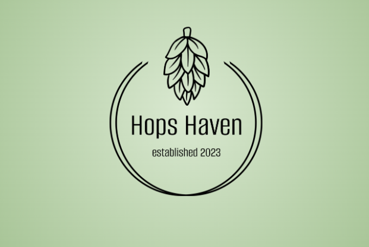

Cinexplorer
Our team designed a search engine tailored to the interests of movie enthusiasts, which includes features such as the ability to dynamically generate a catalog of films based on the user's inputs and as well as remembering searches.
East Bay College Fund Website
Managed and maintained company website through WordPress and all social media (Increased social media audience following by approximately 300% on all platforms).
Hops Haven
Hops-Haven is a full-stack web application that beer enthusiasts can use to find data on the beers they love and discover new beers they might enjoy.